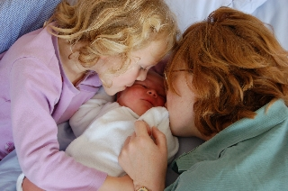

Personal
Family
I am married to Alice Benton, who is Head of Education Services in the University of Cambridge and a Fellow of Newnham College. We have a daughter, Charlotte, and a son, Hugh.
My father, Peter Benton, was, until his retirement, University Lecturer in Educational Studies and Vice-Master of St Cross College, Oxford.
My mother, Susan Benton, has also retired. She was previously headmistress of Newlands Girls' School, Maidenhead.
My little brother, Tim, is a Senior Director of Engineering at Arm.
Friends
My chums mostly seem to be mathematicians or computer scientists, so perhaps I should get out more. I used to have a list of some of them here, but now you can look on Facebook or LinkedIn instead.